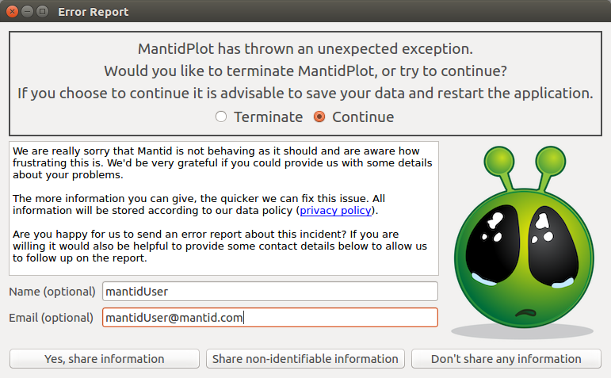

User Support#
Introduction#
As Mantid continues to facilitate cutting-edge scientific research, for an increasing number of users, the support side of Mantid is growing more and more important. This can be in many circumstances and through different avenues; therefore, below is detailed our support procedures.
The main purpose of user support for the Mantid project, is to aide contact between the users and developers.
{kind=link}

Error reporter sends details directly to Mantid support#
Bugs and Error Reports#
Users can report bugs via the Mantid Help Forum or the Mantid Help Email, or from collected Error Reports. Currently this is a quick first contact with the team, but doesn’t give much detail about the usage or unexpected error.
The bug is verified and reproduced by the support team.
The impact and importance are assessed by the support team member by contacting the users, instrument scientists, developers or project manager as appropriate.
A GitHub issue to resolve the problem is created if appropriate and/or workaround tested if possible.
The user is contacted to give a link to the created issue and/or workaround solution, by the support team.
When any issue is completed naming a user, that user is contacted to let them know it will be available in the nightly build and next release. The gatekeeper that merges the fix should message the appropriate developer, to remind them to contact the original reporter. This could simply be through adding a comment while merging that points this out.
Troubleshooting#
This is a list designed to take a user through how to gain diagnostic information, particularly when Mantid (Workbench) fails to launch.
For performance profiling check out our recommended tools.
Windows#
For a full release, C:\MantidInstall\ is likely the correct install path. Take care to readjust this to C:\MantidNightlyInstall\ if you are diagnosing a nightly version.
Does the splash screen appear? Can get a rough idea how far through launch it stops.
Does the error reporter appear? Is there a useful stacktrace? [If the errorreport won’t send, the user can check with “Show Details”]
Try launching from a command prompt:
C:\MantidInstall\bin\MantidWorkbench
If this does not work, try launching with:
cd C:\MantidInstall\bin set QT_PLUGIN_PATH=%CD%\..\plugins\qt5 set PYTHONPATH=%CD%;%PYTHONPATH% python -m workbench.app.main
Does Qt import correctly? In a command prompt / terminal window, run the following:
C:\MantidInstall\bin\python.exe import qtpy.QtCore
Do Mantid Algorithms import correctly?
C:\MantidInstall\bin\python.exe import mantid.simpleapi
Turn off Server Checks: Open
C:\MantidInstall\bin\Mantid.user.propertiesin any texteditor, add each code line to the end of the file and try to open Workbench after each.Instrument File :
UpdateInstrumentDefinitions.OnStartup = 0Mantid Version :
CheckMantidVersion.OnStartup = 0Usage Reporting:
usagereports.enabled = 0Project Recovery:
projectRecovery.enabled=false
Try renaming Config Files:
cd %APPDATA%\mantidproject mv mantidproject.ini mantidproject.ini.backup # Try again to start workbench, if that doesn't work ... cd %APPDATA%\mantidproject mv mantid mantidbackup # Try again to start workbench
Advanced options:
Check the PATH for conflicts with Mantid:
echo %PATH%
cd C:\MantidInstall\bin\ python -c "import sys; import os; import pprint; pprint.pprint(sys.path); pprint.pprint(os.environ)"
Check for conflicts with numpy:
python -c "import numpy; print(numpy.__file__)"Anything outside ofC:\MantidInstallcould be a problem.If there is a local version of Numpy, Matplotlib, Scipy etc., prevent Mantid from looking there, by running:
set PYTHONNOUSERSITE=1Try to open workbench. After it fails, open Event Viewer (just search in the Windows menu bar) and selected
Windows Logs->Application. Double-click on the relevant error line/s and send the crash information to the dev team.Process Monitor: Download here. Extract the ProcessMonitor.zip and run Procmon.exe (which requires admin credentials). Set up a configuration filter for
Process Name contains python, clickADD,APPLY,OKand then launch Mantid Workbench, then back in Process Monitor select File>Save and save as aLogFile.PMLfile and send to the dev team.
Linux#
For a full release, /opt/Mantid/ is likely the correct install path. Take care to readjust this to /opt/mantidnightly/ if you are diagnosing a nightly version.
Does the splash screen appear? Can get a rough idea how far through launch it stops.
Does the error reporter appear? Is there a useful stacktrace? [If the errorreport won’t send, the user can check with “Show Details”]
Try launching from the terminal:
/opt/Mantid/bin/mantidworkbench
Does Qt import correctly? In terminal, run the following:
/opt/Mantid/bin/python3 import qtpy.QtCoreDo Mantid Algorithms import correctly?
/opt/Mantid/bin/python3 import mantid.simpleapiTry renaming Config Files:
cd $HOME/.config/mantidproject mv mantidproject.ini mantidproject.ini.backup # Try again to start workbench, if that doesn't work ... cd $HOME mv .mantid .mantidbackup # Try again to start workbench
Turn off Server Checks: Open
$HOME/.mantid/Mantid.user.propertiesin any texteditor, add each code line to the end of the file and try to open Workbench after each.Instrument File :
UpdateInstrumentDefinitions.OnStartup = 0Mantid Version :
CheckMantidVersion.OnStartup = 0Usage Reporting:
usagereports.enabled = 0Project Recovery:
projectRecovery.enabled=false
Advanced Options:
Check the PATH for conflicts with Mantid: e.g. Anything relating to
.localcould be a problem.echo $PATH
cd /opt/Mantid/bin/ python -c "import sys; import os; import pprint; pprint.pprint(sys.path); pprint.pprint(os.environ)"
Check for conflicts with numpy:
python -c "import numpy; print(numpy.__file__)"Anything relating to.localcould be a problem.If there is a local version of Numpy, Matplotlib, Scipy etc., prevent Mantid from looking there, by running:
export PYTHONNOUSERSITE=1Check the terminal output for an error
Failed to create history session.This can happen if the sqlite database has not been unlocked, e.g. from a previous crashed session. To work around this, replace the original with a new copy. The warning should give the location of the database, e.g.
~/.ipython/profile_default/history.sqlite. Ensure there are no Mantid sessions running, then make a copy of the database as follows (replace the path if it is different):cd ~/.ipython/profile_default/ mv history.sqlite history.sqlite.orig cp history.sqlite.orig history.sqlite
Further diagnosis for process monitoring: strace.
After a hard crash run:
dmesg | grep -i memoryand you may get an error log such as“Out of memory: Killed process”…To get a stacktrace from C++ follow these steps:
Before opening MantidWorkbench, open a terminal and run
ulimit -c unlimitedThen in the same terminal, open MantidWorkbench with
/opt/mantidworkbench/bin/mantidworkbenchand use as normal.If there is a crash, then you will find a
core.1234(some number) file in the current working directory of the terminal, which the user can send to us!Run
gdb python3 core.1234to get the stacktrace from this coredump file.
Built-in Help Not Displaying#
It has been observed that the built-in help window can display empty content
under some circumstances.
If another package has created a directory in the path $HOME/.local/share/mime
along with a file $HOME/.local/share/mime/packages/user-extension-html.xml
then that package has registered that it will handle all .html files,
causing Mantid help to display a blank page.
The Mantid help can be restored by renaming the mime directory:
mv ~/.local/share/mime .local/share/mime.orig
It is unclear what might break in other applications but nothing as yet has been observed.
MacOS#
Does the splash screen appear? Can get a rough idea how far through launch it stops.
Does the error reporter appear? Is there a useful stacktrace? [If the errorreport won’t send, the user can check with “Show Details”]
Try launching from terminal, by running the following:
open --stdout=workbench_bundle.log --stderr=workbench_bundle.log /Applications/MantidWorkbench.app
If this does not work, try launching with:
cd /Applications/MantidWorkbench.app/Contents/MacOS ../Resources/bin/python -m workbench.app.main
Does Qt import correctly?
/Applications/MantidWorkbench.app/Contents/Resources/bin/python import qtpy.QtCoreDo Mantid Algorithms import correctly?
/Applications/MantidWorkbench.app/Contents/Resources/bin/python import mantid.simpleapiTurn off Server Checks: Open
$HOME/.mantid/Mantid.user.propertiesin any texteditor, add each code line to the end of the file and try to open Workbench after each.Instrument File :
UpdateInstrumentDefinitions.OnStartup = 0Mantid Version :
CheckMantidVersion.OnStartup = 0Usage Reporting:
usagereports.enabled = 0Project Recovery:
projectRecovery.enabled=false
Try renaming Config files:
cd $HOME/.config/mantidproject mv mantidproject.ini mantidproject.ini.backup # Try again to start workbench, if that doesn't work ... cd ~ mv .mantid .mantidbackup # Try again to start workbench
Advanced Options:
Check the PATH for conflicts with Mantid: e.g. Anything relating to
.localcould be a problem.echo $PATH
cd /Applications/MantidWorkbench.app/Contents/Resources/bin/ python -c "import sys; import os; import pprint; pprint.pprint(sys.path); pprint.pprint(os.environ)"
Check for conflicts with numpy:
python -c "import numpy; print(numpy.__file__)"Anything relating to.localcould be a problem.If there is a local version of Numpy, Matplotlib, Scipy etc., prevent Mantid from looking there, by running:
export PYTHONNOUSERSITE=1Further diagnosis for process monitoring: dtrace.